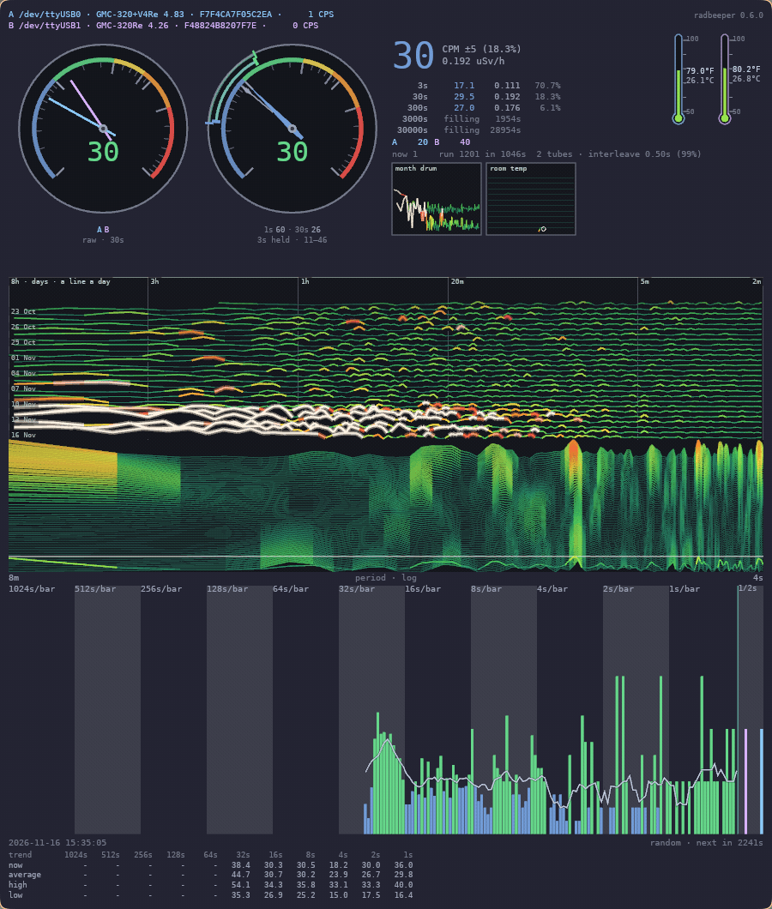

Reading the window
What every number on the RadBeeper window means, feature by feature.

The window is radbeeper-gui. It opens no serial port; it reads the same stream the service publishes, so what it shows is what the log has. From the top down, one page each:
- The counters and the dials — which counters are connected, what each counted last second, and the bands on the dials
- The big number and the five averages — the same reading over five windows, and how well each window knows its number
- The status line — this second's count, the run so far, and how two counters share the second
- The drum spectrogram, read as a landscape — height, tint and brightness: the striped panel as a relief map, and the paper filling from empty
- The counts — a bar a second, older bars packed coarser, the trend line and the pointer
- The random line — the newest bits drawn from decay timing, and which counter earned them
- The table — the trend line in numbers, and where the table goes in a small window
The window follows the desktop's light or dark theme, and fits whatever space it is given: in a small window the table goes first and the charts last.
Added 16 November 2026: the thermometer, the tiles and the long papers.
- The thermometer, top right, is the counter's own, on a scale from 50 to 100 °F with the reading in °F and °C. It is there only when a counter has given a temperature. Click it, or press
t, for the temperature drum. - The striped chart has three papers. The live one at the foot is as it was. Above it is a line for each day, and above that a line for each month. They are full when the window opens, because they are made from the log.
- A tile is a paper folded away: click a paper, or press
d,mort, and it becomes a small picture of itself under the big number; click the tile to open it again. - The averages and the long bars of the counts are full at once. When the window opens it reads the last hours of the log, so the 3000-second and 30000-second averages do not start from nothing. Bars finer than 32 seconds stay empty for the stretch that came from the log. With two counters this is not done.
Reading the drum spectrogram has the pictures.